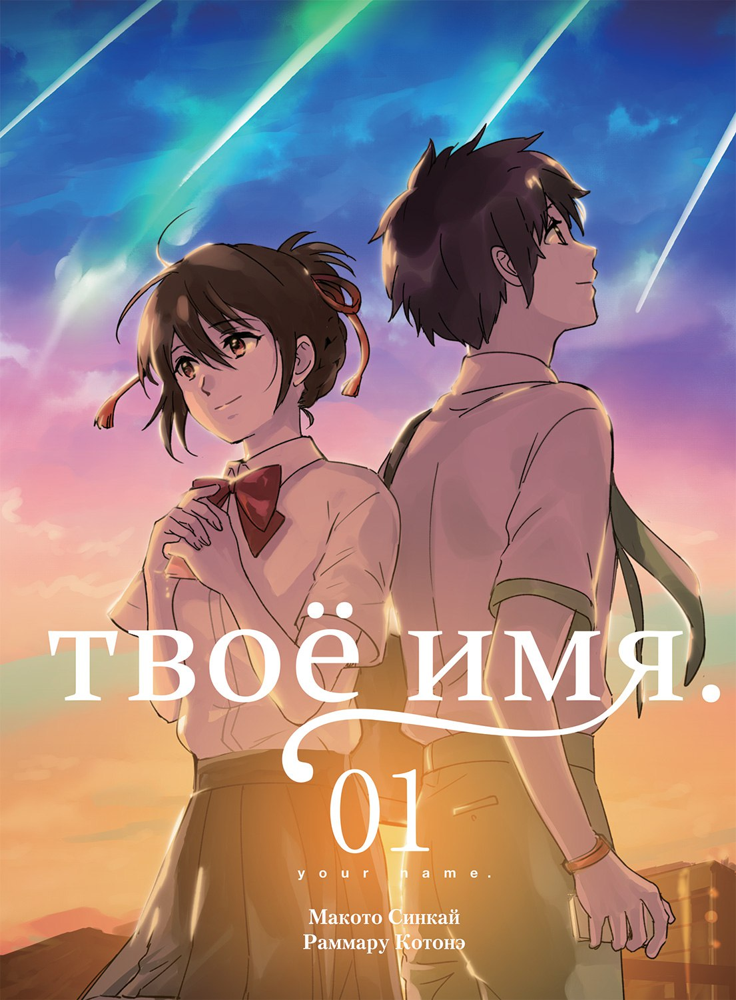
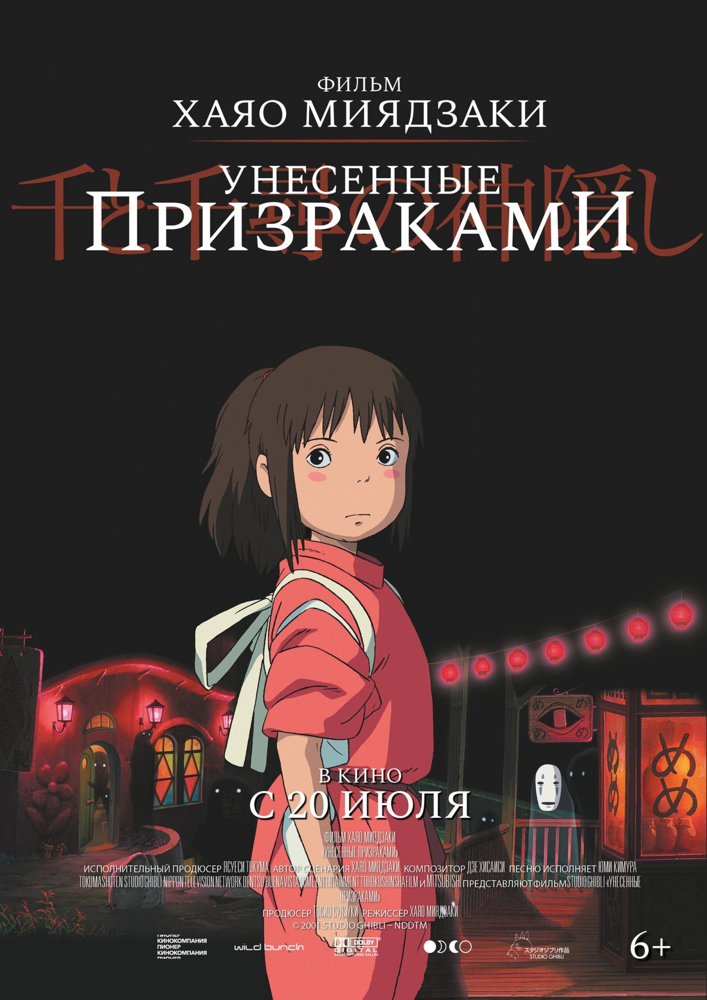
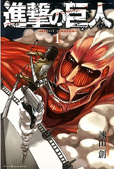
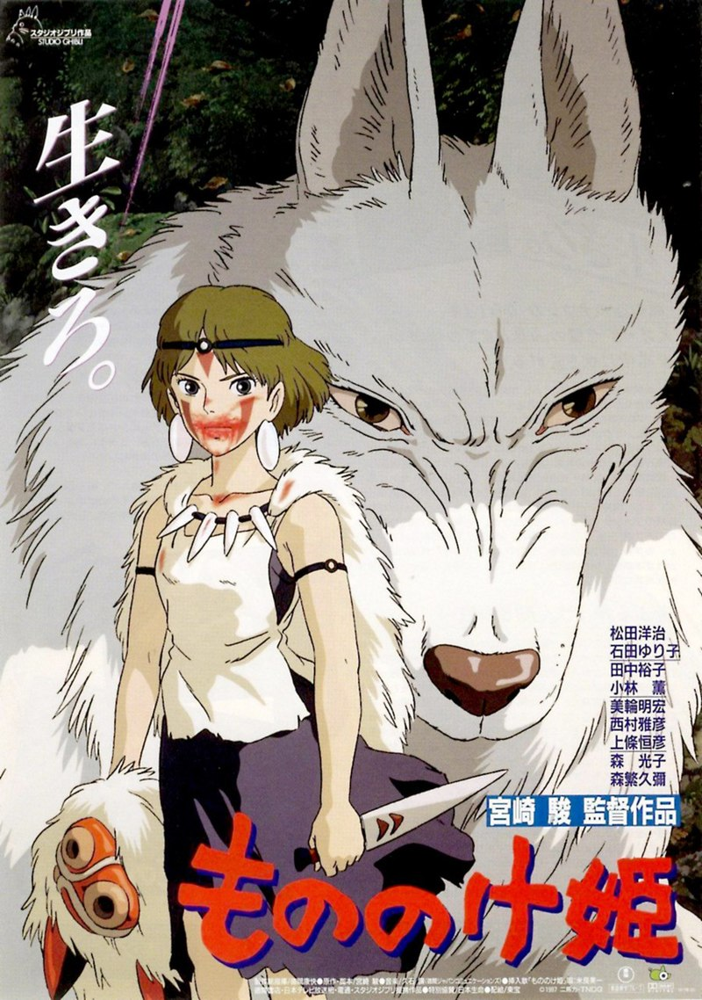
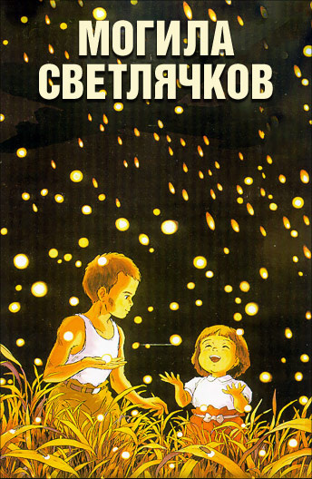

| Название фильма |
Описание |
Год выпуска |
Фотография |
Главные актеры |
| Кими но на wa (Твоё имя) |
Мицуха и Таки никогда не встречались, но каждую ночь они видят одинаковый сон. Мечтая о чем-то большем, они начинают искать друг друга. |
2016 |
 |
Рё Нараки, Мони Камишираи, Рюносукэ Камики, Айки Сузуки |
| Унесённые призраками |
Сити — пожилой киевлянин, ветеран войны, давно потерявший свою семью. Он теперь перевозчик туш, упакованных в клетки гостей для банкетов. В старом доме, в глубине леса, Сити знакомится с таинственной Нэро и его дочерью. |
2001 |
 |
Такаши Наито, Мицухиса Иса, Рёно Хара |
| Атака титанов: Начало |
Эрен и его друзья живут в мире, огороженном высокими стенами для защиты от гигантских титанов. Однако мир рушится, когда колоссальный титан появляется и разрушает стену. |
2013 |
 |
Юки Кадзи, Юи Исикава, Марина Иноуэ |
| Принцесса Мононоке |
Ашитака — принц, который отправляется на поиски исцеления для своей болезненной руки и сталкивается с огромным кабаном-богом. В процессе он встречает прекрасную но непредсказуемую принцессу Мононоке. |
1997 |
 |
Юдзи Мидзушима, Ицуко Суми, Акира Ибуки |
| Могила светлячков |
Эмоциональная история о двух сиротах во время Второй мировой войны. Джун и его младшая сестра Сэцуко борются за выживание и ищут убежище в разрушенном городе. |
1988 |
 |
Цуцуми Шинко, Аяко Сираши, Акихико Накамура |